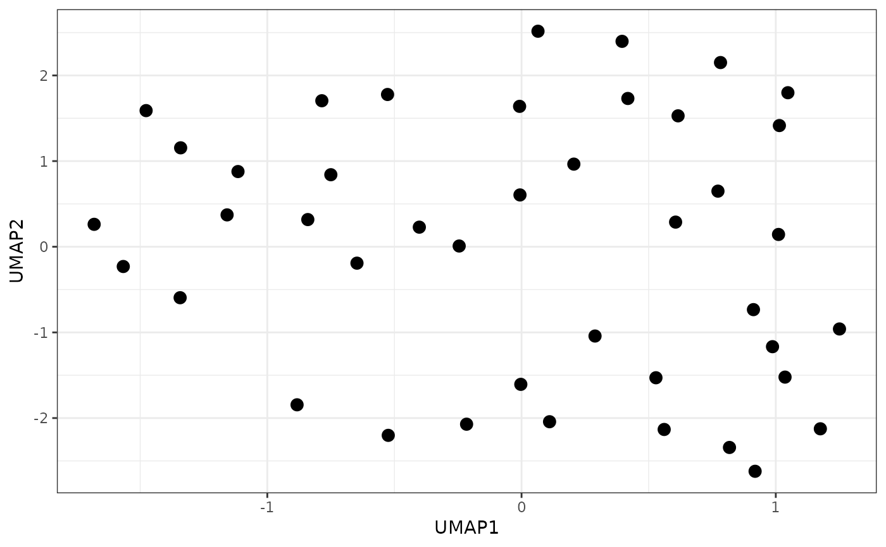
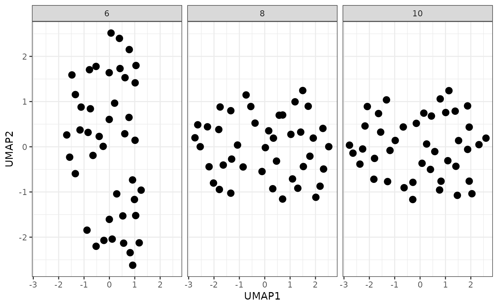
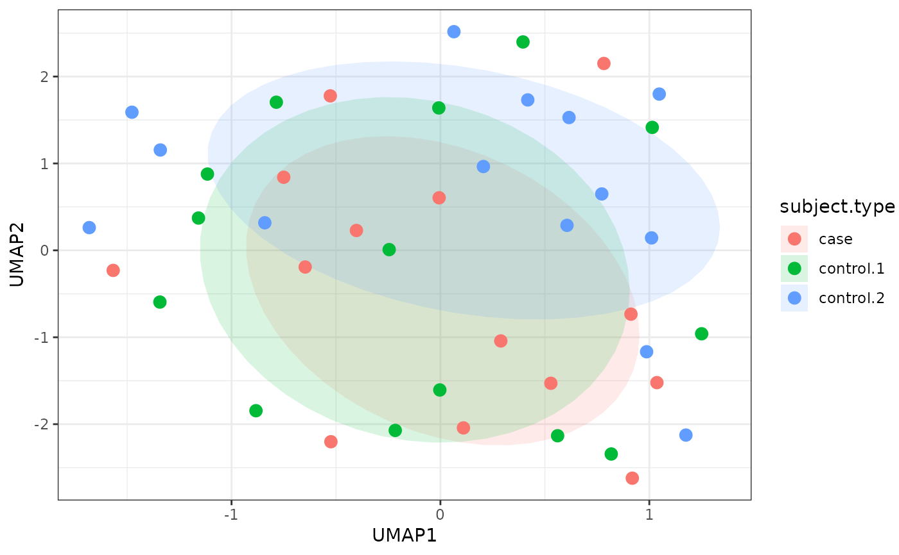
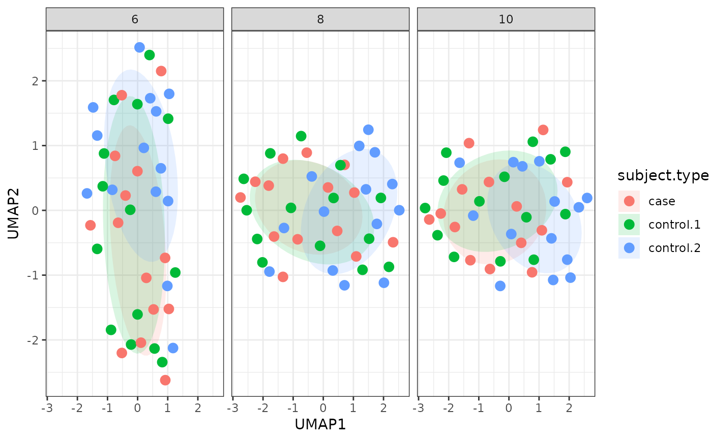

plot_umap.RdA convenience function for creating UMAP scatter plots of samples in an ExpressionSet/MSnSet object.
plot_umap(
msnset,
phenotype = NULL,
n_neighbors = NULL,
min_dist = 0.1,
n_epochs = 1000,
point_size = 3,
show_ellipse = TRUE,
ellipse_type = "norm",
ellipse_level = 0.5,
show_na = TRUE,
...
)an MSnSet object.
character; one of the colnames(pData(msnset)).
integer; number of nearest neighbors to use for UMAP.
If NULL (default) will use the closest integer to the
square root of the number of samples. If a vector of multiple
values are supplied, multiple plots will be generated and arranged
with facet_wrap.
numeric; determines how close points appear in the final layout (default: 0.1).
integer; number of iterations performed during layout optimization (default: 1000).
numeric; size of the plotted points (default: 3).
logical; whether to plot ellipses.
character; the type of ellipse. "norm" (the default) assumes a multivariate normal distribution, and "t" assumes a multivariate t-distribution.
numeric; if ellipse_type="euclid", the radius
of the circle to be drawn; otherwise, the confidence level
(default: 0.5).
logical; whether points with missing phenotype labels
should be plotted (default: TRUE).
Other arguments that can be passed to
umap.defaults or
facet_wrap.
A ggplot object
# Load msnset
data(srm_msnset)
# Do not color by phenotype
plot_umap(msnset)

# Plots for several values of n_neighbors
plot_umap(msnset, n_neighbors = c(6, 8, 10))

# Points colored by subject.type
plot_umap(msnset, phenotype = "subject.type",
show_ellipse = TRUE)

# Plots for several values of n_neighbors with
# points colored by subject.type
plot_umap(msnset, phenotype = "subject.type",
n_neighbors = c(6, 8, 10),
min_dist = 0.01, show_ellipse = TRUE)
